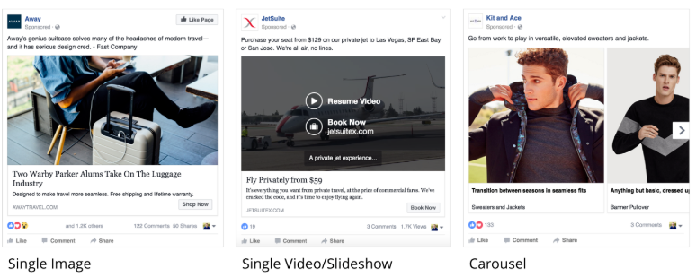

Advertising on Facebook
What ad types does Facebook offer?
We can classify Facebook’s ad options based on what the ads look like and what objectives they have
What Facebook ads look like
Here you have four different choices – you can create an ad that features a single image, a single video, or multiple images that are displayed either in a carousel format or as a slideshow

Facebook also offers a new, more immersive ad experience on mobile. They call it Facebook Canvas. Canvas looks like a normal mobile news feed ad, but once a user taps to open the ad, he or she is taken to a full screen experience (videos, images, text, products) that the advertiser can customize. To learn more about Facebook Canvas, go to
canvas.facebook.com
What objectives can I meet with my Facebook ads?
You can optimize ads on Facebook based on what specific objective your campaign has. Generally, Facebook distinguishes three different kinds of objectives that follow the traditional user journey from awareness to conversion:
- Raising awareness: This includes campaigns to raise brand awareness, local awareness and to maximize reach.
- Consideration: These are ads that drive traffic to your website, boost the engagement of your posts, increase app downloads or video views and help you collect customer data (leads) to use in follow-up campaigns.
- Conversion: These are ads that increase the conversion on your website or online shop, advertise specific products to users who have interacted with your shop before, or get people to visit your local store.
Note that conversion campaign objectives require you to add a few lines of code to your website, which will then implement the Facebook pixel on your site. To learn how to create a Facebook pixel and how to add it to the code of your website,have a look here. If you want to track the actions that happen inside your mobile app as a result of your ads, your developer should implement a piece of code called App Events. Point them to this site to learn more
Based on past user behavior data, Facebook will show your ad to those people in your target audience who are most likely to perform the action you want them to.
What targeting options does Facebook offer?
Facebook offers a variety of targeting options that you can combine to build a specific audience:
Location:Target users by country, state, city, zip code, or the area around your physical business.
Demographics:Target users by age, gender, education, and the languages they speak.
Interests:Target users by interests, based on profile information, pages, groups or content they engage with. You can choose from hundreds of categories like sports, movies, music, games, or shopping. You can also target users who like specific pages.
Behaviors:Target users based on what Facebook knows about user behavior, such as the way they shop, the phone they use, or if they plan to buy a house or a car.
Connections:Target users who like your page or app and their friends.
Custom:Target existing customers based on data (e.g., emails, phone numbers) you provide. You can also create Lookalike Audiences – people who are similar to your existing customers.
How to get started
We will walk through the process of setting up ad campaigns on Facebook step by step in the following lessons. But for your reference, click here to start advertising on Facebook, and here to access Facebook’s documentation that describes every single ad type.
--------------------------------------------------------------------------------------------------------------------------------------------------------------------------------
Snapchat-->it's evolved into a combination of multimedia messaging and content platform
-----------------------------------------------------------------------
One Possible Solution
Let’s say you decided to run an ad for BambooHR on LinkedIn. As you know, BambooHR is a software solution for small- and medium-sized companies to organize all their HR related information in one place. Their target customers are HR managers in small businesses and the product is for business usage, so LinkedIn seems to be the best platform to meet them. HR managers tend to be very active on LinkedIn, too, since it’s a great resource to recruit or research potential employees.
To make sure you reach HR decision-makers in small businesses, you would make use of LinkedIn’s ‘Experience targeting’ to target people who work in a HR function in a company with less than 500 people. You might also use ‘Location targeting’ to focus only on users from the US, if this is the only market where BambooHR is currently available.
On LinkedIn, it makes sense to book a Sponsored Content ad, because its placement on people’s newsfeeds gives you more space to talk about the product and it feels less promotional. It turns out BambooHR also has a pretty active company page on LinkedIn, so that’s a great place to link back to, and might also earn them some additional followers.
In your ad, you could showcase the short video that BambooHR features on their website, which explains the product in 3 minutes. Your ad copy could say: “Find out why BambooHR is the No. 1 online HR software for small and medium businesses. Try us for free today, and free up time for meaningful work!”
A click on the ad would bring the user directly to the free trial landing page, so BambooHR can collect the contact information of their potential customers.
--------------------------------------------------------------------------------------------------------------------------------------------------------------------------------------------------------------------------